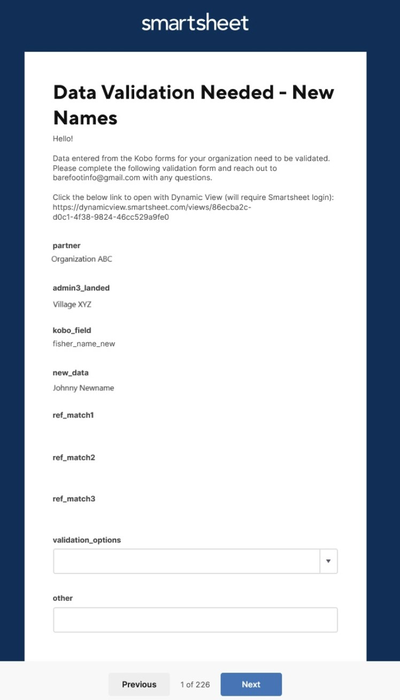

Uthibitishaji wa Data
Mwongozo Wa Uthibitishaji Wa Data Ya Uvuvi
Takwimu zote zinazotiririka kupitia mfumo wa data ya uvuvi zinathibitishwa Katika Smartsheet. Data ni alimtuma kwa ajili ya uthibitisho chini ya matukio matatu; 1) majina mapya au ‘nyingine’ habari ni manually aliongeza Katika Kobo Kukusanya, 2) thamani ya tarakimu iko zaidi ya vizingiti imara au 3) majina katika seti ya data hawana mechi sambamba katika faili ya kumbukumbu. Mara data ni kuthibitishwa, wote seti data katika database na meza za kumbukumbu ni updated. Jedwali la kumbukumbu kutumika kama pembejeo kwa orodha dropdown katika fomu kobotoolbox na vyenye data ambayo ni aliongeza kwa seti data kupitia joins. Tazama mti wa uamuzi hapa chini (Kielelezo 1).
Takwimu zilizosababishwa kwa uthibitisho hutumwa kwa moja ya meza nne: 1) Majina na Gia, 2) Maonyo Ya Thamani, 3) Spishi Au 4) Nyingine. Maagizo hapa chini yanaelezea mchakato wa uthibitishaji wa data Katika Smartsheet Dynamic View kwa meza nne za uthibitishaji. Kila meza ya uthibitisho itahitaji ama kuchagua thamani sahihi uwanja kutoka orodha dropdown au kuingia maadili sahihi manually. Mchakato huo utaongezwa kwa mahitaji ya uthibitisho wa data ya baadaye, kama inavyotakiwa.
Jedwali la uthibitishaji la ‘Majina Na Gia’ lina data mpya kutoka kwa tafiti zote Za Kobo ikiwa ni pamoja na majina mapya ya wavuvi, wanunuzi, watoza data, maeneo ya uvuvi, maeneo ya kutua na gia. ‘Onyo thamani’ ina taarifa za tarakimu zilizokusanywa kutoka Landings Ufuatiliaji au Landings Profiling utafiti ambayo flagged thamani ya data kulingana na kizingiti kabla ya kuanzishwa. Jedwali la uthibitishaji wa ‘Spishi’ lina picha na majina mapya ya ndani kutoka kwa tafiti zote ili kuthibitisha spishi mpya kwa kutumia mchakato wa uthibitishaji mara mbili. Hatimaye,’ Nyingine ‘data uthibitisho meza ina ’nyingine’ habari zilizokusanywa kutoka Kutua Profiling, Jamii Profiling au Kaya Utafiti na ni hasa kuthibitishwa kwa madhumuni ya tafsiri.
Ujumbe wa barua pepe wa kila siku hutumwa na habari na viungo juu ya jinsi ya kukamilisha uthibitisho wa data (tazama maagizo ya kina hapa chini). Arifa za ziada kutoka Smartsheet Au Barefoot Ocean zinaweza kutumwa kupitia barua pepe kufuatilia na uteuzi wa uthibitisho wa data usio kamili, ikiwa inahitajika.
Hatua ya 1: Toa Bahari Isiyo Na Viatu na anwani za barua pepe za mawasiliano kwa wale wanaohusika na uthibitishaji wa data.
Shirika kusimamia washirika mbalimbali inaweza kutoa pointi zote za mawasiliano ya habari.
Washirika binafsi wanaweza kutoa hatua ya mawasiliano ya habari.
Pointi za mawasiliano zitapokea arifa za uthibitishaji wa data kupitia barua pepe.
Hatua ya 2: Angalia barua pepe yako kwa ombi la uthibitishaji wa data.
Utapokea barua pepe kutoka Kwa “Smartsheet Automation” (Kielelezo 2)
Barua pepe itakuwa na ujumbe na viungo kuendelea na uthibitisho kupitia ama “Mtazamo Nguvu”au” Ombi Wazi”. Dynamic View ni umbizo la jedwali Na Ombi Wazi litakuelekeza kwenye fomu ya uthibitishaji.
Ili kufungua na “Mtazamo Wa Nguvu” (Hatua Ya 3, Chaguo A), bofya kiungo kinachoanza na “https://dynamicview.smarthseet.com….”
Ili kufungua fomu ya ombi la sasisho (Hatua Ya 3, Chaguo B), bofya kitufe cha bluu “fungua ombi”
Hakikisho la maingizo ambayo yanahitaji kuthibitishwa itaonekana chini ya ujumbe huu, lakini hautaweza kudhibitisha data yoyote moja kwa moja kwenye barua pepe
Chini ya barua pepe, kuna kiungo cha “Nenda kwenye karatasi”; hata hivyo, karatasi ya msingi ina upatikanaji mdogo. Tafadhali kagua uthibitishaji wako wa data kupitia dynamic view, open request, au ripoti mahususi ya mshirika wako (inakuja hivi karibuni).
Kielelezo 1: Mti wa uamuzi Wa uthibitishaji Wa Data.

Kielelezo 2: Mfano Smartsheet Uthibitisho Email Ujumbe

Hatua ya 3, Chaguo A: Kamilisha uthibitishaji wako wa data kupitia Dynamic View (imependekezwa)
Kwa chaguo hili, utahitaji kuunda akaunti Ya Bure Ya Smartsheet. Utaelekezwa kutoka kwa barua pepe ili kuanzisha akaunti.
Bofya kwenye kiungo Cha Mtazamo Wa Nguvu katika ombi la barua pepe.
Dirisha jipya la kivinjari cha mtandao litafunguliwa na usanidi kama wa meza kwa viingilio vyote. Hapa, unaweza kusogeza kwa urahisi maingizo yote ambayo yanahitaji uthibitisho.
Bonyeza mstari kuanza uthibitisho.
Jopo la “Maelezo” litaonekana upande wa kulia.
Kagua sehemu za muktadha na ujaze sehemu za uthibitishaji. Mashamba ya uthibitisho yana data ambayo itahamishiwa kwenye seti ya mwisho ya data (Jedwali 1).
Acha maoni, IKIWA tu kuna kitu kinachohitaji umakini wetu. Wafanyakazi Wa Bahari ya Barefoot watapitia maoni na kujibu ipasavyo.
Bofya kitufe cha bluu “Hifadhi” ili kuhifadhi uteuzi wako.
Mara baada ya kuthibitishwa, safu hiyo itatoweka kutoka kwa mtazamo wako wa nguvu.
Bofya kwenye safu mlalo inayofuata na urudie hatua ili kukamilisha uthibitishaji wa maingizo yote.
Unaweza kutoka na kuingia tena kwa kubofya kiungo cha mtazamo wa nguvu kutoka kwa barua pepe yako au kuingia kwenye akaunti yako wakati wowote. Huna haja ya kuthibitisha maingizo yote katika kikao kimoja.
Unaweza kuweka alama kwenye kiunga hiki na kurudi wakati wowote.
Jedwali 1: mashamba Ya Msingi au nguzo katika meza ya uthibitisho. Mazingira mashamba kutoa taarifa zinazohitajika kuthibitisha data. Sehemu za uthibitishaji zimejaa data ambayo itahamishiwa kwa hifadhidata kuu. Tu mashamba ya uthibitisho inaweza kuhaririwa. Baadhi ya mashamba ni tu inayoonekana katika” Maelezo ” jopo wakati safu ni clicked katika Meza Ya Mtazamo Nguvu.
| Shamba la jedwali la uthibitishaji | Maelezo ya shamba | Aina ya shamba |
|---|---|---|
| All Data Validation Tables | ||
| partner | jina la shirika kukusanya data | muktadha |
| admin3_landed | Kijiji au kijiji kidogo ambapo samaki alitua na kurekodiwa | muktadha |
| data_collector | Jina la mtu ambaye alikusanya data Katika Kobo (enumerator) | muktadha |
| Names and Gears | ||
| kobo_field | Sehemu kutoka kwa fomu Ya KoboCollect ambayo inahitaji kuthibitishwa au jina ambalo halina mechi katika faili za kumbukumbu. | muktadha |
| new_data | Thamani ambayo iliingizwa kwa kobo_field inayolingana | muktadha |
| ref_match1 | Jina linalolingana kwa karibu ambalo tayari lipo kwenye hifadhidata. Kama tupu, hakuna majina zilizopo mechi jina katika safu “new_data” | muktadha |
| ref_match2 | Jina linalolingana kwa karibu ambalo tayari lipo kwenye hifadhidata. Kama tupu, hakuna majina zilizopo mechi jina katika safu “new_data” | muktadha |
| ref_match3 | Jina linalolingana kwa karibu ambalo tayari lipo kwenye hifadhidata. Kama tupu, hakuna majina zilizopo mechi jina katika safu “new_data” | muktadha |
| validation_options | Chagua uwanja na data sahihi (new_data, ref_match1, ref_match2, ref_match3), ingiza thamani nyingine (nyingine), au uondoe (ondoa safu kutoka kwa uchambuzi kwa sababu data haiwezi kuthibitishwa). Inahitajika. Inaonekana tu katika jopo La Maelezo. Kuingia kutatoweka mara tu data itakapothibitishwa. | uthibitisho |
| other | Ingiza thamani nyingine ikiwa hakuna chaguo la uthibitishaji lililo sahihi. Inahitajika KAMA “nyingine” kuchaguliwa kutoka validation_options. Inaonekana tu katika jopo La Maelezo. | uthibitisho |
| landings_submission_ids | Orodha ya vitambulisho kuwasilisha thamani hii mpya data inaonekana katika, kutoka kutua ufuatiliaji Kobo fomu | muktadha |
| profiling_submission_ids | Orodha ya vitambulisho kuwasilisha thamani hii mpya data inaonekana katika, kutoka kutua profiling Kobo fomu | muktadha |
| hhs_submission_ids | Orodha ya vitambulisho vya kuwasilisha thamani hii mpya ya data inaonekana katika, kutoka kwa fomu Ya Utafiti Wa Kaya Kobo. | muktadha |
| species_group | Kundi la aina kuhusishwa na jina mpya gear, kama zilizokusanywa katika Fomu Kobo. Hii itaonekana tu ikiwa” kobo_field ” ni kitengo cha gia. | muktadha |
| gear_type | Inahitajika IKIWA inathibitisha majina mapya ya gia. Orodha ya kushuka ya aina gear kuhusishwa na jina gear kuthibitishwa. | uthibitisho |
| fisher_gender | Jinsia inayohusishwa na mvuvi mpya, kama ilivyokusanywa katika Fomu Ya Kobo. Hii itaonekana tu ikiwa “kobo_field” ni jina la mvuvi. | muktadha |
| buyer_gender | Jinsia inayohusishwa na mnunuzi mpya, kama ilivyokusanywa katika Fomu Ya Kobo. Hii itaonekana tu ikiwa “kobo_field” ni jina la mnunuzi. | muktadha |
| Value Warnings | ||
| fisher_name | Jina la fisher ambaye alitua samaki | muktadha |
| date_landed | Tarehe ya kukamata ilitua | muktadha |
| local_name | Jina la eneo la spishi | muktadha |
| warning_calc | Thamani ya kitengo: uzito/mtu binafsi, bei/uzito, urefu/mtu binafsi, upana/mtu binafsi | muktadha |
| warning | Aina ya onyo | muktadha |
| numerator | Thamani ya nambari ya onyo: uzito, bei, urefu | muktadha |
| numerator_unit | Unit of numerator: kg, g, lb, ons, USD, IDR, PHP, cm | muktadha |
| denominator | Thamani ya dhehebu: hesabu, uzito | muktadha |
| denominator_unit | Kitengo cha dhehebu: nambari, kg, g, lb, ons | muktadha |
| correct | Y = maadili ni sahihi, n=maadili sio sahihi, Ondoa = ondoa kutoka kwa uchambuzi kwa sababu maadili hayawezi kuthibitishwa. Inahitajika. | uthibitisho |
| correct_numerator | Kama sahihi = Y, maadili ni auto-populated, Kama sahihi = N, kuingia thamani sahihi | uthibitisho |
| correct_denominator | Kama sahihi = Y, maadili ni auto-populated, Kama sahihi = N, kuingia thamani sahihi | uthibitisho |
| correct_numerator_unit | Ikiwa nambari_units sio sahihi, chagua chaguo sahihi kutoka kwa kushuka | uthibitisho |
| data_origin | Dataset data alikuja kutoka (Kutua ufuatiliaji au profiling). | muktadha |
| submission_id | Kitambulisho cha uwasilishaji kutoka Kwa Fomu Ya Kobo. Tumia hii kulinganisha dhidi ya data mbichi, ikiwa inahitajika, kwa uthibitisho. | muktadha |
| Species | ||
| data_origin | Dataset data alikuja kutoka (Kutua Ufuatiliaji ‘lm’, Kutua Profiling ‘lp’, Jamii Profiling ’ cp ‘Au Kaya Utafiti ’hhs’) | muktadha |
| admin1 | Admin1 ambapo catch ilikuwa landed na kumbukumbu. | muktadha |
| admin2 | Admin2 ambapo catch ilikuwa landed na kumbukumbu. | muktadha |
| fisher_name | Jina la fisher linalohusishwa na data hii mpya ya spishi. | muktadha |
| new_species_photo | Kiungo kwa picha iliyowasilishwa Katika Kobo Kukusanya | muktadha |
| new_data | Thamani ambayo iliingizwa kama spishi mpya jina la ndani Katika Kobo Kukusanya au jina la ndani NA kitambulisho cha jina la kisayansi (localname_scientificspecies) ambayo hailingani tena na jina linalopatikana katika species_ref | muktadha |
| ref_match1 | Jina linalolingana kwa karibu ambalo tayari lipo kwenye hifadhidata. Kama tupu, hakuna majina zilizopo mechi jina katika safu “new_data” | muktadha |
| ref_match2 | Jina linalolingana kwa karibu ambalo tayari lipo kwenye hifadhidata. Kama tupu, hakuna majina zilizopo mechi jina katika safu “new_data” | muktadha |
| ref_match3 | Jina linalolingana kwa karibu ambalo tayari lipo kwenye hifadhidata. Kama tupu, hakuna majina zilizopo mechi jina katika safu “new_data” | muktadha |
| eng_common_name_new | Jina la kawaida la kiingereza la spishi mpya. Tafadhali toa ikiwa inajulikana, vinginevyo acha tupu. (Haihitajiki) | uthibitisho |
| scientific_family_new | Jina la familia ya kisayansi ya aina mpya. Tafadhali toa ikiwa inajulikana, vinginevyo acha tupu. (Haihitajiki) | uthibitisho |
| scientific_species_new | Jina la aina ya kisayansi ya aina mpya. Tafadhali toa ikiwa inajulikana, vinginevyo acha tupu. Inahitajika: ikiwa jina la spishi halijulikani, tafadhali weka kiwango chochote cha kitambulisho cha ushuru (kwa mfano jina la Familia, jina la kawaida la kiingereza) | uthibitisho |
| submission_id | Kitambulisho cha uwasilishaji kutoka Kwa Fomu Ya Kobo. Tumia hii kulinganisha dhidi ya data mbichi, ikiwa inahitajika, kwa uthibitisho. | muktadha |
| validation_options | Chagua uwanja na data sahihi (local_name_new, ref_match1, ref_match2, ref_match3), ingiza thamani nyingine (nyingine), au uondoe (ondoa safu kutoka kwa uchambuzi kwa sababu data haiwezi kuthibitishwa). Inahitajika. Inaonekana tu katika jopo La Maelezo. Kuingia kutatoweka mara tu data itakapothibitishwa. | uthibitisho |
| other | Ingiza thamani nyingine ikiwa hakuna chaguo la uthibitishaji lililo sahihi. Inahitajika KAMA “nyingine” kuchaguliwa kutoka validation_options. Inaonekana tu katika jopo La Maelezo. | uthibitisho |
| latest_comment | Safu hii huhifadhi maoni ya mwisho ambayo yalitolewa kwa safu hiyo. Ili kuona majadiliano yote ya maoni kwa safu hiyo, bonyeza tu mahali popote kwenye safu. Jopo la maelezo litaonekana na bonyeza kwenye kichupo cha “Maoni” kutazama maoni yote ya safu hiyo. | auto |
| Other | ||
| kobo_field | Sehemu kutoka kwa fomu Ya KoboToolbox ambayo inahitaji kuthibitishwa. Hii inaweza kuwa kutoka swali (q) katika Kutua Profiling (‘lp’), Jamii Profiling (‘cp’) au Kaya Utafiti (‘hhs’). | muktadha |
| new_data | Thamani ambayo iliingizwa kwa kobo_field inayolingana | muktadha |
| data_origin | Dataset data alikuja kutoka (Kutua profiling, jamii profiling, Kaya utafiti). | muktadha |
| submission_id | Kitambulisho cha uwasilishaji kutoka Kwa Fomu Ya Kobo. Tumia hii kulinganisha dhidi ya data mbichi, ikiwa inahitajika, kwa uthibitisho. | muktadha |
| validation_options | Chagua shamba na data sahihi (new_data), ingiza thamani nyingine (nyingine), au uondoe (ondoa safu kutoka kwa uchambuzi kwa sababu data haiwezi kuthibitishwa). Inahitajika. Inaonekana tu katika jopo La Maelezo. Kuingia kutatoweka mara tu data itakapothibitishwa. | uthibitisho |
| other | Ingiza thamani nyingine ikiwa hakuna chaguo la uthibitishaji lililo sahihi. Inahitajika KAMA “nyingine” kuchaguliwa kutoka validation_options. Inaonekana tu katika jopo La Maelezo. | uthibitisho |
| validated_data_english | Inahitajika. Ingiza tafsiri ya kiingereza ya new_data au uwanja mwingine ikiwa ‘nyingine’ ilichaguliwa kama chaguo la uthibitishaji. Inaonekana tu katika jopo La Maelezo. | uthibitisho |
Kielelezo 3: Mfano Dynamic View-Thamani Maonyo

Kielelezo 4: Mfano Dynamic View-Maelezo Jopo

Hatua ya 3, Chaguo B: Kamilisha uthibitishaji wako wa data kupitia ‘Ombi Wazi’
Kwa chaguo hili, hauitaji kuwa Na Kuingia Kwa Akaunti Ya Smartsheet .
Bofya kitufe cha “fungua ombi” katika ujumbe wa barua pepe wa uthibitishaji.
Dirisha jipya la kivinjari cha mtandao litafunguliwa na usanidi kama fomu kwa kila kiingilio
Kagua sehemu za muktadha na ujaze sehemu za uthibitishaji. Mashamba ya uthibitisho yana data ambayo itahamishiwa kwenye seti ya mwisho ya data (Jedwali 1).
Bofya inayofuata chini ya skrini ili upitie kila ingizo linalohitaji kuthibitishwa.
Ili kuruka kiingilio (k. m. ikiwa bado huna uhakika ni jibu gani la kuchagua) bofya “Inayofuata” bila kufanya uteuzi katika safu wima ya’ uthibitishaji_options’. Ingizo linalofuata la uthibitishaji litaonekana.
Ikiwa unahitaji kutoka kwenye ukurasa au kuacha kabla ya maingizo yote kuthibitishwa, chaguo zako zinapaswa kuhifadhiwa wakati mwingine utakapofungua tena ombi. Baada ya kufungua ili kuendelea, bonyeza tu “Ifuatayo” hadi upate kiingilio kinachohitaji uthibitisho.
Unapofika kwenye kiingilio cha mwisho, bonyeza “Imekamilika”. Ujumbe ibukizi utaonekana ukiuliza ikiwa uko Tayari kuwasilisha sasisho lako?’:
Bofya “Rudi nyuma” ikiwa unahitaji kukagua
Bofya “Wasilisha Sasisha” ili kuwasilisha uthibitishaji
Angalia kisanduku cha “Nitumie nakala ya majibu yangu” ikiwa ungependa nakala ya majibu yako yatumwe kwa barua pepe yako
Ukibofya “Nitumie nakala ya majibu yangu” utapokea barua pepe yenye kichwa “Sasisha Uthibitisho: Majina na Gia”.
Kutakuwa na meza muhtasari ambayoriesies walikuwa updated. Riesies ambayo hakuna chaguo alichaguliwa katika ’validation_options” si ni pamoja na.
Barua pepe hii inaweza kuwa na kiungo kwa jina la karatasi “Uthibitisho Wa Data-Majina na Gia”; hata hivyo, upatikanaji wa karatasi hii imefungwa.
Ili kuona uthibitisho wowote uliobaki unahitajika, utahitaji kusubiri barua pepe inayofuata ya ombi la sasisho au ufungue Mtazamo Wa Nguvu.
Kielelezo 5: Mfano wa muundo Wa” Ombi Wazi”

Maswali Yanayoulizwa Mara Kwa Mara:
- Je, watu wengi wanaweza kufanya kazi kwenye uthibitishaji wa data kwa wakati mmoja?
- Ndiyo, hata hivyo, mara moja kuingia (safu) imekuwa kuthibitishwa Katika Mtazamo Nguvu itakuwa tena kuonekana.
- Je, ninahitaji Akaunti Ya Smartsheet?
- Tu kukamilisha data uthibitisho kupitia Mtazamo Nguvu (yaani meza mtazamo). Huna haja ya akaunti iliyolipwa, na jaribio la bure au toleo la bure (mara tu jaribio lako litakapokamilika), utaweza kutazama na kuingiliana na faili Zote Za Smartsheet zinazomilikiwa Na Bahari Ya Barefoot.
- Nini kinatokea baada ya data kuthibitishwa?
- Katika baadhi ya kesi, data itakuwa kupitia mapitio ya ziada na Barefoot Ocean data team. Takwimu zilizothibitishwa zitasasishwa kwenye hifadhidata, na inapofaa, menyu za kushuka zitasasishwa katika Faili Na fomu za kumbukumbu Za Kobo (Kielelezo 6). Data ambayo haijathibitishwa haitaonekana kwenye taswira za dashibodi au takwimu, lakini itapatikana katika upakuaji wa data mbichi.
Ikiwa wakati wowote unakutana na makosa yoyote, una maswali, au unahitaji msaada wa kukamilisha uthibitisho wa data, tafadhali wasiliana nasi kwa barefootinfo@barefootocean.org.
Kielelezo 6: Data Uthibitisho Kwa Kumbukumbu Faili Workflow